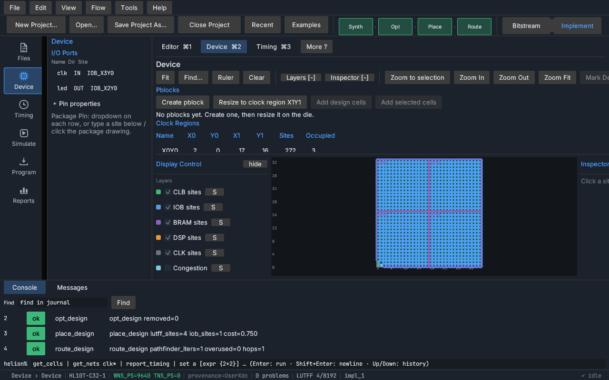
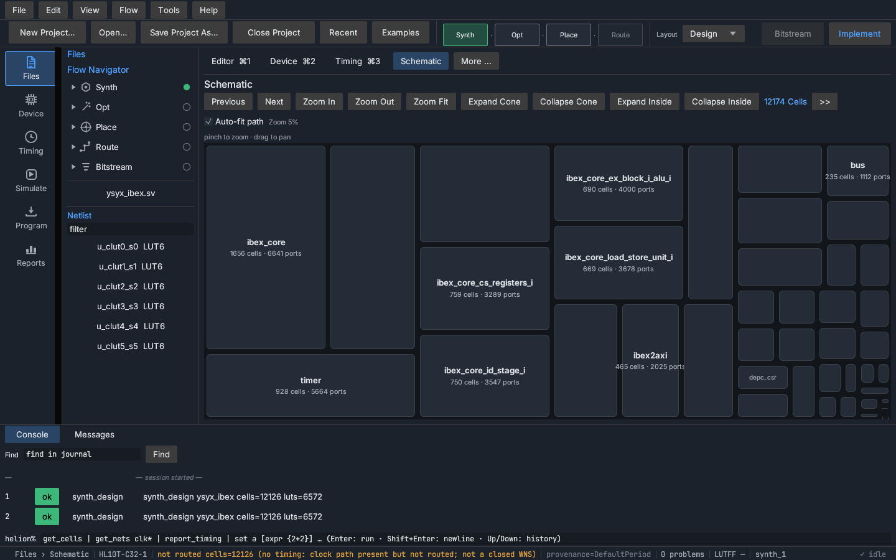
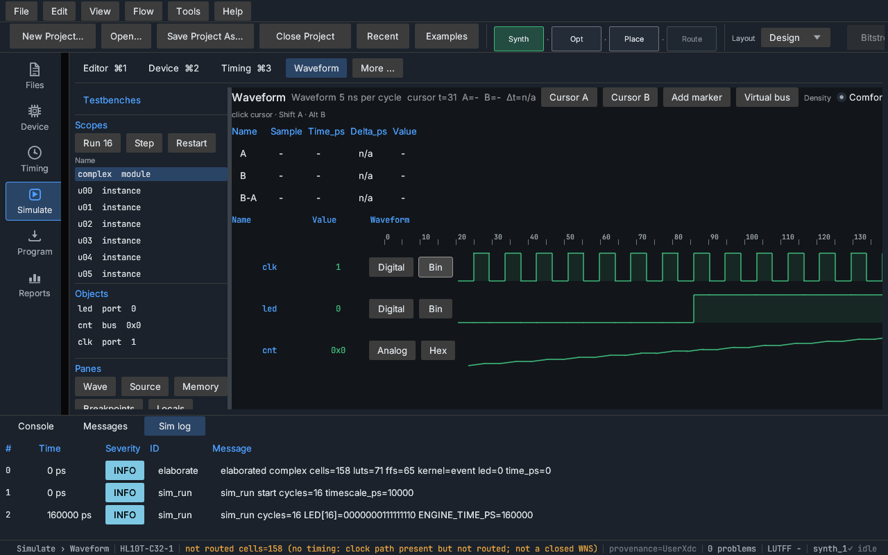
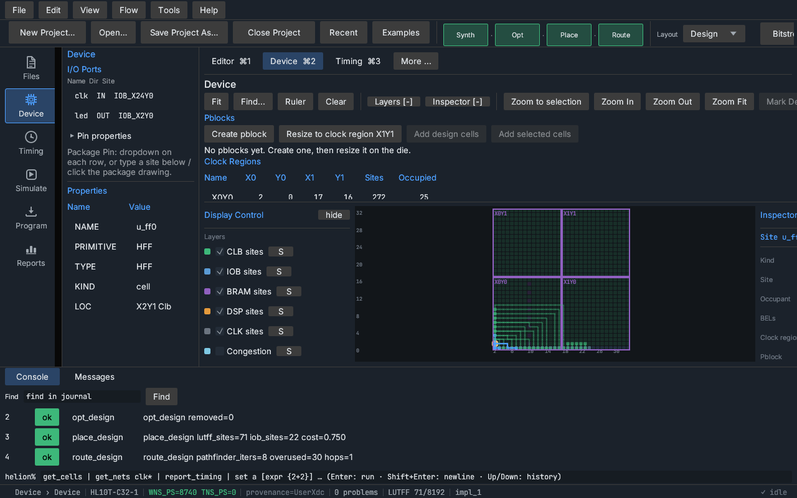
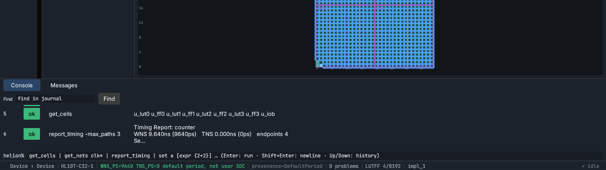
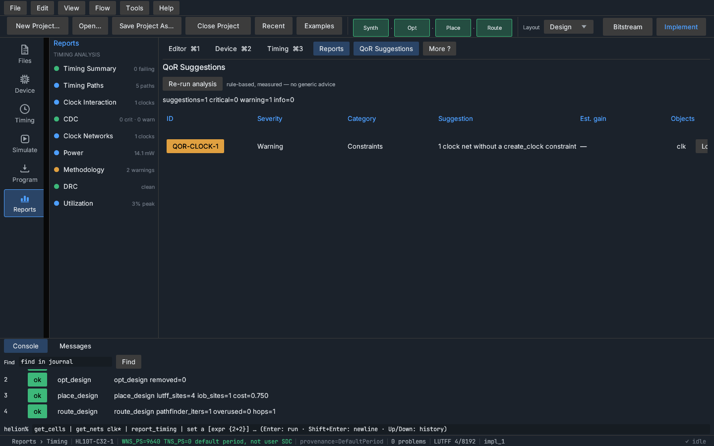

One binary. The whole FPGA flow. Two device families.
Helion is an FPGA CAD suite, not a vendor-tool wrapper. Write SystemVerilog or VHDL, run one command, and get a placed, routed, timing-closed bitstream for the HL10T die or Xilinx 7-series parts. Deterministic, fail-loud, and measured.

Physical View 2.0: a real complex.sv run, 71 LUTFF + 22 IOB placed and routed, WNS_PS=8740
What it does
Each step is a crate. The Tcl session drives the same engines the CLI uses.
CompileSynth to bitstream
SystemVerilog / VHDL frontend, AIG-based synthesis with ABC-style rewriting, LUT6/FF/DSP/BRAM packing, simulated-annealing placement, PathFinder routing, graph-based STA with WNS/TNS and hold checks.
Xilinx 7-seriesSecond backend
xc7a35t device model from open bitstream databases. Pack, place, route, FASM emission, frames to .bit, all in Rust, zero vendor tools. FASM output byte-identical to prjxray's encoder.
VerifyProve it, don't eyeball it
SAT-based combinational equivalence checking, SystemVerilog assertions (immediate and concurrent), and clock-domain-crossing structural analysis with 11 violation classes, integrated in the IDE.
InspectSee everything
Physical View 2.0 with heat maps and inspector, schematic level-of-detail for large designs, waveform viewer, cross-probing, real Tcl console, integrated logic analyzer, VCD-driven power.
The IDE
Real interface, real runs. No marketing renders.




synth_design, place_design, write_bitstream, get_cells.
complex.sv, 47 seconds, no cuts.Why Helion
- ✓One binary, whole flow.
helion implement design.prjruns synthesis through bitstream. No toolchain stitching. - ✓Deterministic.
Same RTL in, same bits out. The QoR gate fails the build if LUT counts, WNS, or bitstream bytes move without a reason recorded in the same commit.
- ✓Fail-loud.
Over-capacity designs error instead of emitting a clipped bitstream. Congested routing is refused, never silently clipped.
- ✓Measured, not claimed.
Every number on this page traces to the benchmark report or a pushed commit.
- ✓Multi-vendor by design.
NetlistIRplus aBackendtrait. HL10T and Xilinx 7-series are the first two backends, not the only ones.
Gold on HL10T-C32-1
Measured by helion qor. A LUT, WNS, bitstream-size, or wall-time regression fails the build until the table is updated in the same commit with a reason.
| Design | LUTFF | WNS_PS | .hbits B |
|---|---|---|---|
blinky.sv | 1 | 9700 | 153 |
counter.sv | 4 | 9640 | 185 |
hier.sv | 1 | 9700 | 153 |
Each gold design uses 1 IOB. helion run examples/counter.sv --cycles 16 prints LED[16]=0000000111111110, identical in the fabric model and the event simulator.
Get it
Prebuilt binaries on the releases page: Linux x86_64, macOS arm64, plus SHA256SUMS.txt. Or build from source with Rust 1.85+.
git clone https://github.com/helion-fpga/helion.git
cd helion
cargo test --workspace
cargo run -p helion-cli -- run examples/counter.sv --cycles 16macOS note: the app is ad-hoc signed, not notarized. Clear the quarantine flag once: xattr -cr /Applications/Helion.app
Build from source IDE and CLI guide Architecture Legal fence